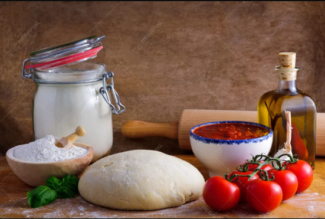
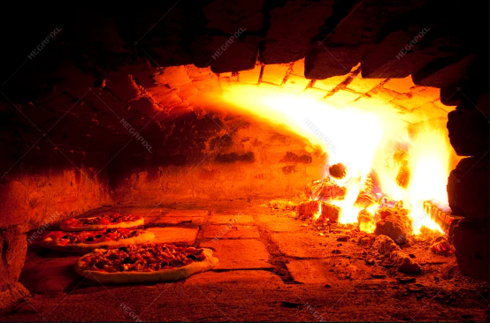
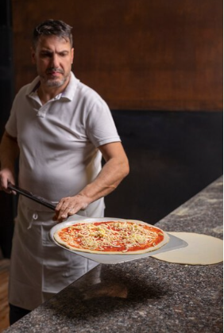

Interested in eating authentic Italian food?
Come and enjoy an excellent pizza at il corno rosso, authentic quality Italian food, we take care of serving the best products available and yet to be available. Alone or in company, stop by to try a pizza that will transport you directly to the streets of Naples
Il Corno Rosso, Non è solo pizza!
Que nos diferencia de las otras pizzerias?
< class="service-containers">Solo trabajamos con materia prima de calidad!
Desde albahaca cultivada a orillas del rio Tiber y tomate San Marzano, hasta masa fermentada 72 horas en frio solo usamos lo mejor!
Il forno del diavolo!
Contamos con un horno pizzero alimentado unicamente con leña, llega a unos 450°C para lograr ese cornicione que a todos nos gusta!
La practica hace al maestro... pizzero!
Nuestras pizzas las prepara un verdadero Pizzaiolo